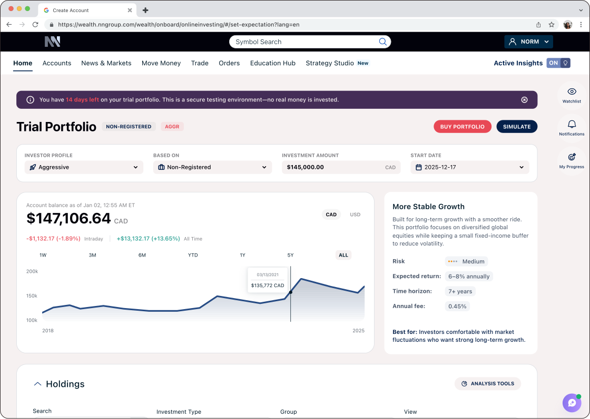
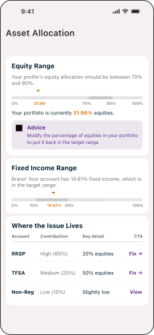
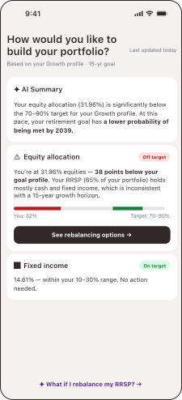
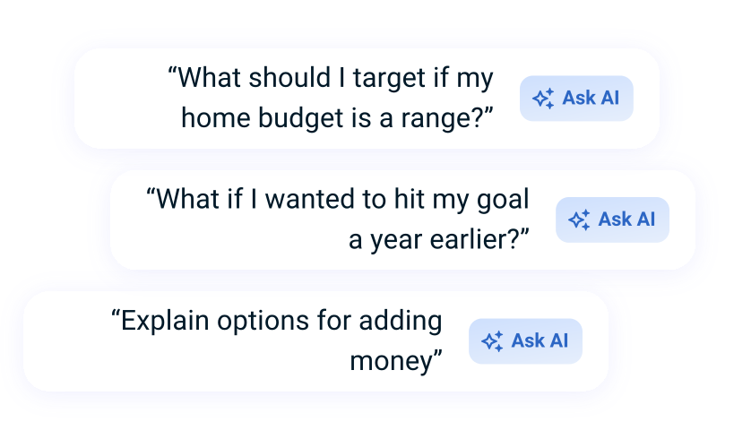
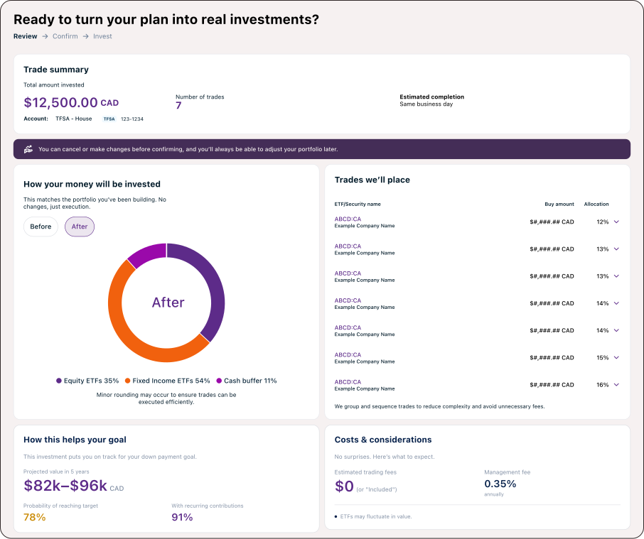
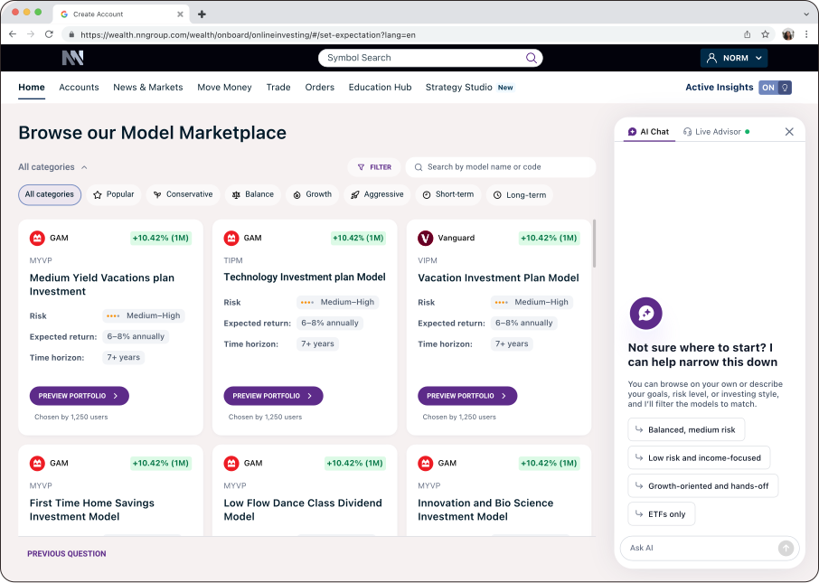
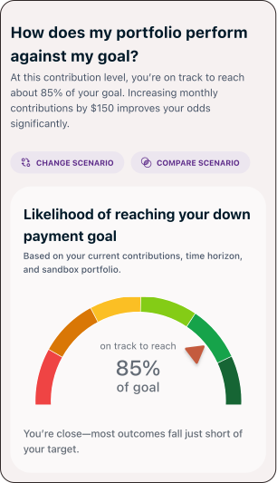

Reframing Self-Directed Investing
Through AI
BMO InvestorLine gives investors full control — no advisor required. But control without guidance creates friction at the moments that matter most. Over 7 months, I owned Journey 2 (Portfolio Understanding) end-to-end — discovery synthesis, flows, and high-fidelity prototypes — collaborating across all three journeys to keep the experience aligned.
Work was divided by journey: UX Designer → Onboarding (J1) · me → Portfolio Understanding (J2) · Lead Designer → Trade (J3). Key J2 concepts were also applied to the empty state — designed for pre-account users to explore the platform before committing.

The real problem wasn't friction. It was fear.
Users didn't trust the platform enough to act alone. They struggled to find features, understand information, and make financial decisions without human help.
Discovery ran two tracks: workshops with stakeholders, and existing research the client shared — interviews with 5 advisors who reported what users told them every time they called for help.
The existing "advice" panel flagged threshold breaches with no user context:
"You have investments with low ratings. Sell investments with a rating of 49 or less."
Same alert for every user regardless of goals, timeline, or risk profile. Rules, not reasons.
How might we guide investors while preserving their autonomy?
Users don't want automation. They want confidence.
We reframed the platform as a guidance system, focused on three principles:
As a self-directed platform, BMO couldn't make recommendations under CIRO rules. The challenge: surface enough context for a confident decision without ever tipping into advice. Every screen had to guide, never instruct.
Stakeholder alignment was the hardest part.
7 months combining research, product definition, and rapid experience design across three journeys.

Context-Aware Advice: The existing "advice" was just threshold monitoring, with no awareness of the user or their goals.
Human-Centered Pivot: From monitoring thresholds to understanding the person, creating trust through customized insights.
Users needed to feel supported, not overridden. Every AI insight had to preserve their sense of control.
Financial data is complex. We simplified explanations without losing meaning.
Guidance needed to appear at moments of uncertainty, not constantly — or it would feel intrusive, not helpful.
Every AI-generated insight had to be transparent and grounded in data. Black-box answers break trust in a financial context.
Two profiles. One shared need.
BMO defined two audiences. I mapped their shared needs and the tensions between them — they drove every design decision.
Need: Control, visibility, and fast access to insights.
Avoid: Redundant or overly prescriptive guidance.
Need: Intuitive guidance and confidence to act independently.
Avoid: Unclear decisions and buried guidance.
"Help me understand my portfolio, know what to do next, and feel confident acting on my own."
From anxiety to confidence — by design.
Not a chatbot. A guidance layer woven into the moments that matter.

From raw data to actionable feedback.
Users struggled to understand why their portfolio moved, not just what changed. We introduced AI-generated explanations that turn portfolio data into clear, contextual insights.
We extended this to benchmarking, helping users compare their portfolio with a BMO model matched to their risk profile — without telling them what to do.
Design decision
The shift: from flagging threshold breaches to connecting portfolio health to the user's actual goals. A narrative before a decision is more valuable than more data.
Static thresholds flagged allocation issues without considering the user's context. The advice panel could identify a problem, but not explain what it meant for the user.

Portfolio health now connects gaps to the user's goals, timeline, and risk profile, providing context before action.
The shift: From flagging problems to helping users understand what they mean.

AI shouldn't be a destination. It should be part of the experience.
Users ignored the dedicated AI hub. They expected help where decisions happened.
We moved AI inline, making guidance contextual, transparent, and available at the moment it mattered.

Design decision
In testing, users ignored the dedicated AI hub. Guidance needs to live where decisions happen — not in a separate screen.
Help users act with confidence by making the impact visible before taking action.
Before committing to a trade, users can see how it could affect their portfolio, risk, and goals — and ask questions in context.

Build confidence through action, not instruction
New investors weren't afraid of the platform, they were afraid of making the wrong move.
The sandbox lets users test a trade, see its impact on their risk, diversification, and balance, and decide whether to execute it for real.
Design decision
New investors weren't afraid of the platform — they were afraid of making a move that couldn't be undone. Confidence comes from doing, not from reading.

Shift users from reactive to proactive thinking by making choices visible before they become urgent.
The What If? tool lets users explore the impact of a decision before acting, making potential outcomes easier to understand.
Design decision
The AI's role isn't to choose. It's to make the user's choices legible before they become urgent.

From vision to a phased build.
Rather than launching everything at once, we defined a progressive rollout — clarity first, then decision support, then personalization.
Three journeys designed. One shipped, all applied.
The engagement ended with a pivot: Journey 1 was selected for implementation and delivered for development. Concepts from Journeys 2 and 3 were carried forward into the empty state experience.
end-to-end
for implementation
end-to-end
across product + eng
For users without a portfolio, the empty state lets them explore the platform before committing — creating a meaningful experience even without real portfolio data.
Onboarding journey delivered and selected for development.
High-fidelity prototypes, tested patterns, and a phased roadmap created a foundation for future personalization.
Portfolio understanding, pre-trade intelligence, and scenario exploration informed the empty state experience.
NPS, CSAT, trade volume, and guidance engagement defined as success measures
What I took away.
Designing for financial decisions isn't just about usability — it's about responsibility.
The goal isn't to make decisions for users, but to help them make better ones.